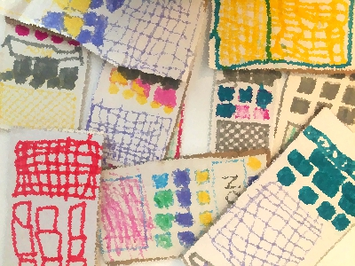
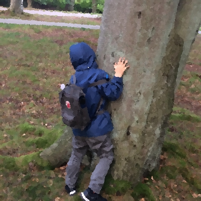
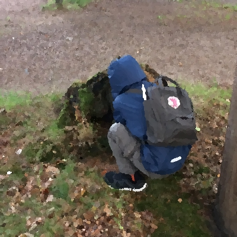

Är du redo för hemliga spionorganisationer, knepiga mysterier som måste bli undersökta, upplösta och superspionerna Cajsa-Marie och pappa Hjalmar? Är du redo för Rävarna?
Jag heter Claes-Magnus och du får gärna kontakta mig - <claes-magnus@bergsans.github.io> - om du har några frågor eller kommentarer. Fler kapitel kommer!
För att lyckas inom spionvärlden kan bra utrutning göra skillnad. Men visst, det är inte på något vis nödvändigt med en massa prylar. Bra spiongrejer kan hjälpa dig på särskilt svåra uppdrag. Men det är du eller ni som genomför uppdragen. Hur skulle en sak kunna hantera ett riktigt knivigt spionuppdrag? Spionsaker kan inget och är inte bättre (eller sämre) än spionen som använder dom.
Nedanför finns lite typisk spionutrustning. Din egen spionorganisation måste förmodligen anpassa utrustningen efter just era uppdrag. Och inget spionuppdrag är det andra likt!
Jag vill återkomma till det faktum att en spion inte helt kan förlita sig på spionutrustning. Du måste lära dig att arbeta med huvudet. Spionorganisationen Rävarna kommer att återkomma med tips på bra övningar för spionhjärnan. Tills dess, minns Rävarnas motto: inget är säkert, allt är misstänkt.
2018-09-07, Claes-Magnus
Vissa menar att spionorganisationen Rävarna finns på riktigt. Även om det inte går att bevisa att Rävarna existerar, tror många i spionbranchen hur som helst att Rävarna är verksamma i Helsingborg. Kanske gör du också klokt i att inte fästa dig för mycket vid namn, ålder och sånt där? Det kan ju vara så att vissa saker som sägs är sanna, medan andra är påhitt? Kanske är du rentav granne med en Räv? ...eller går i samma klass som en? ...är med i samma sportklubb? Vem vet?!
Del 1. Att smyga som en spion. Jag kan smyga riktigt bra: jag vet hur du undviker att bli sedd. Om du vill vara säker på att inte någon ser dig, måste du gömma bakom en sak eller person som är större än du. Desto större föremål eller person, desto bättre. Tror du att någon som går på vägen skulle se mig när jag står gömd så här? Mitt svar är - nej.
Ibland kan det vara svårt att hitta ett stort träd att gömma sig bakom. En bra spion måste ha tillräckligt bra fantasi för att snabbt kunna anpassa sig efter vad hen har att arbeta med. Finns det inget stort föremål eller typ en jääättestor människa att ställa sig bakom, ja - då får du anpassa dig, göra det bästa av situationen.
Här är jag gömd bakom en stubbe:
Du kan se hur jag tvingas krypa ihop en smula? Visst, helt täckt är jag inte... Men det fanns inga bättre ställen häromkring!
En spion måste vara redo ta risker ibland. Att en spion vill undvika risker är ju inte samma sak som att det alltid går att undvika risker. Eller hur?!
Dom här två bilderna tog min pappa imorse. Vill du bli en riktigt braplus spion måste du öva, precis som med andra saker som du vill bli bättre på!
För att inga hemligheter ska bli avslöjade har vi gjort så att bilden är lite suddig. Listigt va? Annars skulle spionorganisationen Rävarna snabbt bli miiindre hemlig, visst?
2018-09-09, Cajsa-Marie